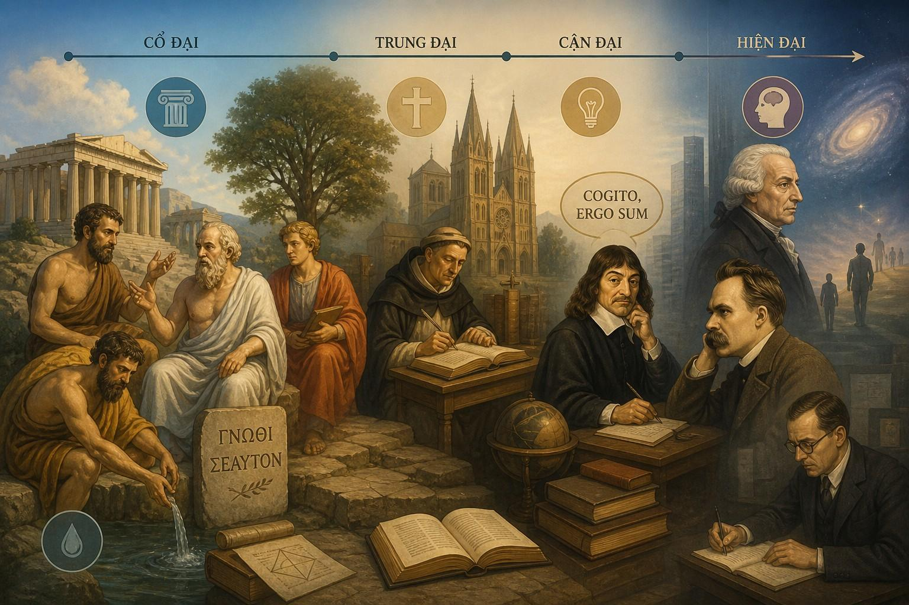

Triết học phương Tây - Phân tích, logic, duy lý

Triết học phương Tây lấy logic và duy lý làm nền tảng, đề cao lý trí, lập luận hệ thống và tư duy phản biện để tìm kiếm tri thức.
Từ thời Cổ đại (Plato, Aristotle) đến Cận đại (Descartes), chủ nghĩa duy lý nhấn mạnh tri thức đến từ trí tuệ và suy luận logic hơn là cảm giác.
Phương pháp này thúc đẩy khoa học, phân tích ngôn ngữ và cấu trúc lại quan điểm về sự thật.
Cốt lõi của triết học phương Tây
• 🧠 Lý trí — tin rằng con người có thể hiểu thế giới bằng tư duy.
• 📐 Logic — một kết luận phải đi từ lập luận chặt chẽ.
• ❓ Phản biện — mọi ý tưởng đều có thể bị chất vấn.
• 🎯 Tìm chân lý — không chỉ tin, mà phải giải thích được vì sao đúng.
=> triết học phương Tây thường hỏi: “Điều đó đúng bằng lập luận nào?”
Khởi nguồn
Khoảng thế kỷ VI TCN tại Ancient Greece
Trước đó, con người thường giải thích thế giới bằng thần thoại
Các triết gia đầu tiên bắt đầu đặt câu hỏi khác:
• Vũ trụ được cấu thành từ gì?
• Vì sao sự vật thay đổi?
• Có quy luật nào chi phối mọi thứ không?
Các giai đoạn lớn
1. Tiền Socrates — truy tìm bản nguyên vũ trụ
Giai đoạn còn tập trung vào tự nhiên
• 💧 Thales — cho rằng nước là nền tảng của vạn vật
• 🔥 Heraclitus — cho rằng mọi thứ luôn vận động và biến đổi
Từ khóa: bản nguyên, tự nhiên, vũ trụ
2. Thời cổ điển — nền móng của triết học phương Tây
Ba cái tên gần như định hình toàn bộ truyền thống phương Tây:
• 🗣 Socrates
◦ Đặt trọng tâm vào đạo đức và đời sống con người
◦ Nổi tiếng với phương pháp đối thoại chất vấn
• 💡 Plato
◦ Cho rằng phía sau thế giới cảm nhận được còn có thế giới ý niệm
• 📚 Aristotle
◦ Xây nền cho logic, khoa học, chính trị học và phương pháp luận
Từ khóa: lập luận có hệ thống
3. Trung đại — lý trí gặp tôn giáo
Giai đoạn này gắn với thần học
• ⛪ Mục tiêu lớn là: lý trí có thể giải thích đức tin đến mức nào?
• ✝️ Thomas Aquinas: kết hợp tư tưởng của Aristotle với thần học Kitô giáo
Từ khóa: đức tin, lý trí, thần học
4. Cận đại — con người biết bằng cách nào?
Triết học chuyển mạnh sang nhận thức luận
Câu hỏi trung tâm:
• Con người biết điều gì?
• Biết bằng cách nào?
Nhân vật nổi bật:
• 🧠 René Descartes — “Tôi tư duy, nên tôi tồn tại”, điểm xuất phát của tri thức là ý thức về chính mình
• 📘 John Locke — con người sinh ra như “tờ giấy trắng”, tri thức đến từ kinh nghiệm
• ⚖️ Immanuel Kant — tri thức không chỉ đến từ thế giới bên ngoài, mà còn do cách bộ não con người tổ chức trải nghiệm
Từ khóa: nhận thức, lý tính, tự do
5. Hiện đại — khủng hoảng giá trị và bản ngã
Từ thế kỷ 19, triết học đi sâu vào con người hiện đại
• ⚡ Friedrich Nietzsche — chỉ ra cuộc khủng hoảng giá trị
Câu “God is dead” nghĩa là: những hệ giá trị cũ đang mất sức mạnh, con người phải tự tạo ý nghĩa sống cho mình.
• 🌌 Carl Jung — mở rộng triết học sang chiều sâu tâm lý dưới ý thức cá nhân còn có vô thức tập thể, ảnh hưởng đến suy nghĩ và hành vi
=> Nietzsche hỏi về giá trị. Jung hỏi về bản ngã.
6. Đương đại — triết học bước vào thời đại AI
Ngày nay, triết học phương Tây đang đối diện những câu hỏi mới:
• AI có thật sự hiểu hay chỉ mô phỏng hiểu biết?
• Máy có thể có ý thức không?
• Nếu AI vượt trí tuệ con người thì điều gì xảy ra?
• Con người nên đặt giới hạn đạo đức nào cho AI?
Hai cái tên nổi bật:
• 🚨 Nick Bostrom — nổi tiếng với khái niệm siêu trí tuệ và bài toán AI alignment
• 🤖 Max Tegmark — đặt câu hỏi về ý thức máy móc và tương lai con người trong kỷ nguyên AI
Câu hỏi lớn nhất hiện nay:
=> Nếu con người tạo ra một trí tuệ mới, liệu định nghĩa về “con người” có phải viết lại?